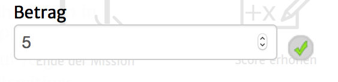

Mit diesem Aktionstyp ist es möglich, die Score-Variable zu verändern. Dies ist eine Variable mit dem Namen "score", welche standardmäßig mit 0 instanziert ist.
Die Variable kann in Texten, durch Eingabe von @score@ ausgegeben werden.
Folgende Einstellungsmöglichkeiten gibt es für diesen Aktionstyp:
|  | Betrag: Die Anzahl an Punkten, die der Score-Variable hinzugefügt werden. Kann auch negativ sein, um eine Verringerung hervorzurufen. |